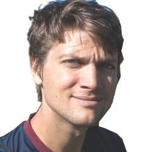

On November 20th, 2015 at 10:00, I successfully defended my licentiate thesis titled
"Multi-Document Summarization and Semantic Relatedness".
Discussion leader was
Tapani Raiko from Aalto University.
During period four (March-May 2016), I taught a PhD course in Deep Learning, together with Mikael Kågebäck and Fredrik Johansson.
The course will cover some of the most important topics in the field, including Convolutional Neural Networks, Recurrent Neural Networks, unsupervised methods, and regularization techniques.
We used a "flipped classroom" approach, with video lectures from some of the best researchers in the field, along with discussion sessions.
The following students are currently writing their master's theses under my supervision.
{% for post in site.categories.students %} {% assign currentdate = post.date | date: "%Y" %} {% if currentdate != date %} {% if forloop.first %} {% else %} {% break %} {% endif %} {% assign date = currentdate %} {% endif %}{{ post.authors }}:
{{ post.title }}
{% if post.shortversion %}
{{ post.shortversion }}
{% endif %}
{{ post.date | date: "%Y-%m-%d" }}:
{{ post.title }}
({{ post.venue }})
{% if post.externallink %}
(details)
{% endif %}
{{ post.shortversion }}
 I work as a PhD student in the machine learning research group with problems related to data science and machine learning, using methods from deep learning and graphical models.
I currently teach Algorithms for Machine Learning and Inference. In the past, I have taught the AI course (specifically the parts about probabilistic methods, including probabilistic graphical models), Object Oriented Programming, Data Structures, and Algorithms (basic course, and advanced course).